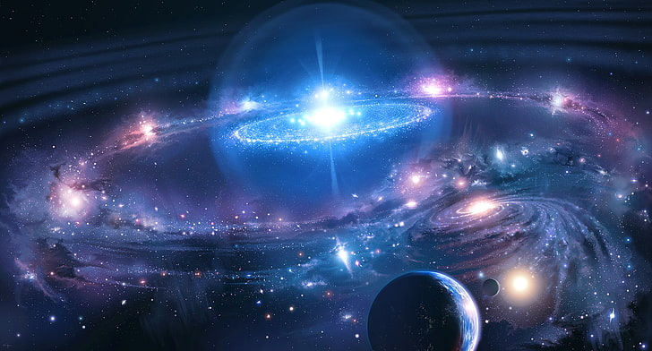
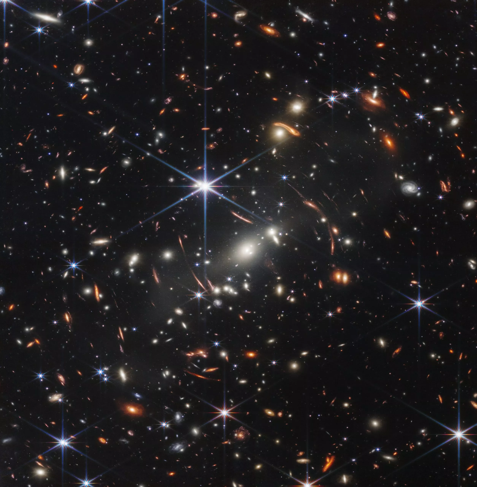
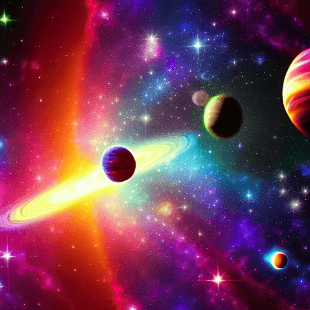

Na astronomia, o Universo corresponde ao conjunto de toda a matéria, energia, espaço e tempo existente.
Ele reúne os astros: planetas, cometas, estrelas, galáxias, nebulosas, satélites, dentre outros.
O universo é, portanto, mais que um local imenso, ele é tudo, e engloba tudo o que existe. Para muitos, infinito. Note que do latim, a palavra universum significa “todo inteiro” ou “tudo em um só”.
|
Segundo a teoria criada pelo astrônomo George Lemaître (1894-1966), o universo tem uma origem comum, a partir da qual tudo se originou. Esta teoria foi confirmada pelo astrônomo norte-americano Edwin Hubble, que verificou que as galáxias estão em constante expansão e afastamento. A teoria do Big Bang diz que toda matéria e energia se concentravam em um ponto super denso e quente, conhecido como singularidade. A partir deste ponto, o universo se expandiu num processo conhecido como inflação, que durou uma fração infinitesimal de tempo. Uma série de transformações continuou a acontecer por bilhões de anos, até a estrutura com que o conhecemos hoje. O universo foi se expandindo cada vez mais, de forma que foi se resfriando, dando origem aos diversos astros. A idade do universo é um dos assuntos mais debatidos pela cosmologia e astronomia. Estudos mais recentes apontam que a idade aproximada está entre 13,8 a 14 bilhões de anos. Para chegar a tal conclusão, diversos estudos foram realizados e comparados. Dados foram coletados a partir de satélites, como o satélite Planck, e observatórios terrestres como o Atacama Cosmology Telescope (ACT). Estes estudos consideram a velocidade de expansão do universo. É importante lembrar que a ciência está em constante avanço e tais conclusões estão baseadas no que é possível observar hoje. |  |
Veja também: Origem do Universo.